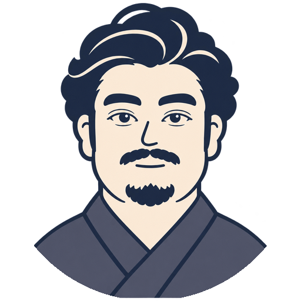

第1号の問い
10年後、いちばん怖いのは何ですか
一行でいいです。返事はしません。月末に、集まった一言を一枚の地図にして返します。
書いた文を持って、送る画面が開きます。開かないときは こちら
問い月に一つ
→
一言一行でいい
→
地図月末に返す
先月の地図

地図０号。まだ一言が届いていないので、公開されている調査の数字と、塾長の仮説と反論を下地にした地図です。来月から、あなたの一言が入ります。 素材：内閣府「国民生活に関する世論調査」（令和7年8月）、同「社会意識に関する世論調査」（令和7年10月）、日本財団「18歳意識調査」第78回。一言：0件。
10分で聴ける
月のはじめに、塾長が自分の名前で考えを話します。月末に、地図を歩きます。
月末の地図を受け取る
メールを一つ書いておくと、月末の地図と講義が届きます。一言を送らなくても、受け取るだけでかまいません。
受け取るメールは、月末の地図と講義を送るためにだけ使います。ほかの誰にも渡しません。やめたいときは「やめる」と一言返せば止めます。この場が閉じたら消します。
この場について
兼聴義塾（けんちょうぎじゅく）とは
（趣意書の本文をここに入れる）

（署名） 兼聴義塾 塾長守ること
（憲章の本文をここに入れる）
連絡先の扱い
メールは書かなくて構いません。書いた場合は、月末の地図と講義を送るためにだけ使います。ほかの誰にも渡しません。やめたいときは「やめる」と一言返せば止めます。この場が閉じたら消します。
この場への連絡：kencho.gijuku@gmail.com（個別の返事はしないことがあります）